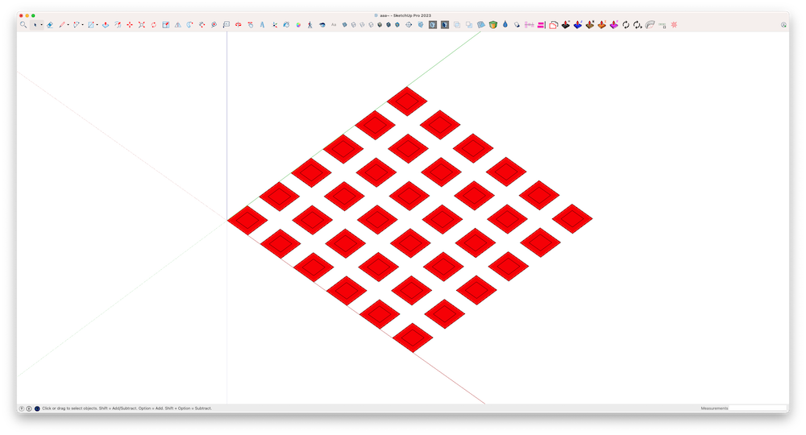
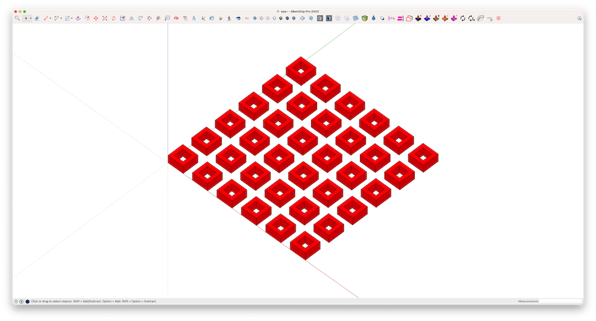

Overview
SmartCleanPush is a powerful SketchUp plugin designed to simplify geometry cleanup and push/pull operations. It is especially useful for optimizing models with complex structures.
Features
- Remove Inner Faces and Push/Pull: Cleans inner geometry and applies thickness to selected faces.
- Remove Inner Faces Only: Removes unnecessary inner geometry without additional operations.
- Multiple Push/Pull: Applies a uniform push/pull operation to multiple faces at once.
How to Use
Toolbar
The plugin provides a dedicated toolbar for easy access to its features:
- Remove Inner Faces and Push/Pull: Click this button to clean inner geometry and apply Push/Pull. You will be prompted to enter a distance in centimeters.
- Remove Inner Faces Only: Click this button to remove inner geometry only.
- Multiple Push/Pull: Click this button to apply Push/Pull to multiple selected faces with a uniform distance.
Extensions Menu
All commands are also accessible via the Extensions menu:
- Extensions > SmartCleanPush > Remove Inner Faces and Push/Pull
- Extensions > SmartCleanPush > Remove Inner Faces Only
- Extensions > SmartCleanPush > Multiple Push/Pull
Examples
Here are some examples of how SmartCleanPush can optimize your workflow:
Before:
After:
Contact
If you have any questions or need support, please contact:
R.K.D Chinthaka Deshapriya
Email: cdeshapriya91@gmail.com
Facebook: https://www.facebook.com/chinthakadesh